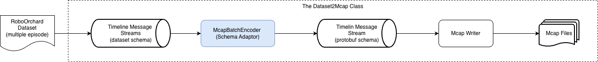

Note
Go to the end to download the full example code.
Ecosystem: MCAP and LeRobot Interoperability¶
Note
This tutorial assumes you have already finish the previous tutorial.
A dataset is only as useful as its ability to interact with the wider ecosystem.
Here, we demonstrate how the RoboOrchard Dataset handles this:
Part 1: Exporting the RoboOrchard Dataset to MCAP: We show how to convert an episode from our dataset back into an .mcap file for high-fidelity visualization in tools like Foxglove. This is a runnable example.
Part 2: Ingesting MCAP to RoboOrchard Dataset: We show a template script for the most common use case: converting a large collection of .mcap files (raw data) into our optimized dataset format for training.
Part 3: LeRobot Conversion: A note on interoperability with other dataset formats.
# sphinx_gallery_thumbnail_path = '_static/images/sphx_glr_install_thumb.png'
Setup and Imports¶
import os
import pprint
from typing import Any, Generator
import datasets as hg_datasets
import torch
from lerobot.datasets.lerobot_dataset import LeRobotDataset
from robo_orchard_lab.dataset.datatypes import (
BatchCameraData,
BatchJointsState,
ImageMode,
)
from robo_orchard_lab.dataset.experimental.mcap.batch_decoder import (
McapBatch2BatchJointStateConfig,
McapBatchDecoderConfig,
McapBatchDecoders,
)
from robo_orchard_lab.dataset.experimental.mcap.batch_encoder import (
McapBatchEncoderConfig,
McapBatchFromBatchJointStateConfig,
)
from robo_orchard_lab.dataset.experimental.mcap.batch_split import (
SplitBatchByTopicArgs,
SplitBatchByTopics,
iter_messages_batch,
)
from robo_orchard_lab.dataset.experimental.mcap.msg_decoder import (
McapDecoderContext,
)
from robo_orchard_lab.dataset.experimental.mcap.reader import McapReader
from robo_orchard_lab.dataset.experimental.mcap.writer import Dataset2Mcap
from robo_orchard_lab.dataset.robot import (
DataFrame,
DatasetPackaging,
EpisodeData,
EpisodeMeta,
EpisodePackaging,
RobotData,
RODataset,
TaskData,
)
from robo_orchard_lab.dataset.robot.conversion.lerobot_dataset import (
LerobotDatasetEpisodePackaging,
get_hg_features,
)
# Define paths
SOURCE_DATASET_PATH = ".workspace/dummy_dataset/"
OUTPUT_MCAP_PATH = ".workspace/conversion/mcap/dummy_dataset_episode0.mcap"
MCAP_INGEST_DATASET_PATH = ".workspace/conversion/mcap/dataset/"
Mcap conversion¶
Part 1: Exporting dataset to MCAP (for Visualization)¶
This is the “Dataset -> MCAP” workflow. It’s useful for debugging, visualization, and sharing.
As the architecture diagram below illustrates, this entire
process is orchestrated by the Dataset2Mcap class.
{kind=link}

The Dataset2Mcap class reads the dataset’s native
stream and uses a configurable McapBatchEncoder
to adapt the schema and write to an MCAP file.¶
The Dataset2Mcap
class reads the Timeline Message Streams (with its native dataset schema) and feeds it into an
McapBatchEncoder,
which acts as the Schema Adaptor.
Our job is to provide the configuration for this adaptor.
This configuration is a Python dict (encoder_cfg) that maps our
dataset’s feature names (e.g., “joints”) to a specific
McapBatchEncoderConfig class (e.g.,
McapBatchFromBatchJointStateConfig).
This config tells the adaptor which MCAP topic (e.g., “/joints”) to
write the data to.
Let’s walk through this step-by-step.
# 1. Load the dataset we created in the previous tutorial
print(f"Loading source dataset from: {SOURCE_DATASET_PATH}")
dataset = RODataset(SOURCE_DATASET_PATH)
# 2. Define the Encoder Configuration (`encoder_cfg`)
# This dict is the configuration for the `McapBatchEncoder`.
# The keys MUST match the feature names in our dataset.
# For this demo, we will only export the "joints" feature.
encoder_cfg: dict[str, McapBatchEncoderConfig] = {
"joints": McapBatchFromBatchJointStateConfig(target_topic="/joints"),
}
# 3. Instantiate the main conversion utility: `Dataset2Mcap`
dataset2mcap_writer = Dataset2Mcap(dataset=dataset)
# 4. Save the first episode (index 0) to an .mcap file
# We pass our `encoder_cfg` to the `save_episode` method.
# The `Dataset2Mcap` instance will use this config to
# properly initialize its internal `McapBatchEncoder`.
print(f"\nSaving episode 0 to {OUTPUT_MCAP_PATH}...")
dataset2mcap_writer.save_episode(
target_path=OUTPUT_MCAP_PATH, episode_index=0, encoder_cfg=encoder_cfg
)
print("\n--- Export Complete! ---")
print(f"You can now open '{OUTPUT_MCAP_PATH}' in Foxglove.")
Loading source dataset from: .workspace/dummy_dataset/
Saving episode 0 to .workspace/conversion/mcap/dummy_dataset_episode0.mcap...
--- Export Complete! ---
You can now open '.workspace/conversion/mcap/dummy_dataset_episode0.mcap' in Foxglove.
Part 2: Ingesting MCAP to RoboOrchard Dataset¶
This is the “MCAP -> Dataset” workflow, it is the same packaging pattern we learned in the previous tutorial.
# define the schema for our data
DATASET_FEATURES = hg_datasets.Features(
{
"joints": BatchJointsState.dataset_feature(), # type: ignore
}
)
# define the mcap schema decoder config
decoder_cfg: dict[str, McapBatchDecoderConfig] = {
"joints": McapBatch2BatchJointStateConfig(source_topic="/joints")
}
# Implement EpisodePackaging
class McapEpisodePackager(EpisodePackaging):
"""An `EpisodePackaging` implementation that pre-processes a full MCAP file before generating frames."""
def __init__(
self,
mcap_path: str,
decoder_config: dict[str, McapBatchDecoderConfig],
monitor_topic: str,
):
self.mcap_path = mcap_path
self.decoder_config = decoder_config
self.monitor_topic = monitor_topic
self.mock_robot = RobotData("robot_from_mcap", "<urdf>...")
self.mock_task = TaskData("task_from_mcap", "...")
def generate_episode_meta(self) -> EpisodeMeta:
"""Returns the static metadata for this entire episode.
.. note::
In a real implementation, you might open the MCAP
briefly here to read a metadata topic).
"""
print(f"\n [{self.mcap_path}] Generating episode metadata...")
return EpisodeMeta(
episode=EpisodeData(), robot=self.mock_robot, task=self.mock_task
)
def generate_frames(self) -> Generator[DataFrame, None, None]:
"""A streaming generator that reads, decodes, and yields frames from the MCAP file one batch at a time."""
print(f" [{self.mcap_path}] Starting frame generation stream...")
# 1. Instantiate the decoders
decoders = McapBatchDecoders(self.decoder_config)
# 2. Instantiate the MCAP reader
with open(self.mcap_path, "rb") as f:
reader = McapReader.make_reader(f)
# 3. Create a message batch iterator
# We'll batch by 1 message on our monitor topic
batch_splitter = SplitBatchByTopics(
SplitBatchByTopicArgs(
monitor_topic=self.monitor_topic,
min_messages_per_topic=1,
max_messages_per_topic=1,
)
)
# 4. Iterate, Decode, and Yield
# This loop reads one batch at a time, processes it,
# yields it, and then discards it from memory
# before reading the next one.
with McapDecoderContext() as msg_decoder_ctx:
for batch in iter_messages_batch(
reader, batch_split=batch_splitter
):
if batch.is_last_batch and len(batch) == 0:
continue
# This call is the "Schema Adaptor" in action
# It converts a batch of MCAP messages into
# a dict of features (e.g., {"robot_joints": ...})
decoded_features = decoders(
batch, msg_decoder_ctx=msg_decoder_ctx
)
# 5. Yield the `DataFrame`
yield DataFrame(
features=decoded_features,
instruction=None,
timestamp_ns_min=batch.min_log_time,
timestamp_ns_max=batch.max_log_time,
)
print(f"\n [{self.mcap_path}] Finished generating frames.")
print("\n--- Starting MCAP Ingestion Process ---")
# 1. Create an iterable of our `McapEpisodePackager` instances
episodes_to_package = [
McapEpisodePackager(
mcap_path=OUTPUT_MCAP_PATH,
decoder_config=decoder_cfg,
monitor_topic="/joints",
)
]
# 2. Initialize the main packager with our *target* schema
packager = DatasetPackaging(
features=DATASET_FEATURES, database_driver="duckdb", check_timestamp=True
)
# 3. Run the packaging process!
packager.packaging(
episodes=episodes_to_package,
dataset_path=MCAP_INGEST_DATASET_PATH,
force_overwrite=True,
)
print("--- Ingestion Complete! ---")
--- Starting MCAP Ingestion Process ---
/home/users/hongyu.xie/workspace/code-base/robo_orchard_group/robo_orchard_lab/robo_orchard_lab/dataset/robot/packaging.py:481: UserWarning: The dataset path '/home/users/hongyu.xie/workspace/code-base/robo_orchard_group/robo_orchard_lab/docs/tutorials/dataset_tutorial/.workspace/conversion/mcap/dataset' already exists. It will be overwritten.
warnings.warn(
Generating train split: 0 examples [00:00, ? examples/s]
[.workspace/conversion/mcap/dummy_dataset_episode0.mcap] Generating episode metadata...
[.workspace/conversion/mcap/dummy_dataset_episode0.mcap] Starting frame generation stream...
[.workspace/conversion/mcap/dummy_dataset_episode0.mcap] Finished generating frames.
Generating train split: 5 examples [00:00, 50.46 examples/s]
--- Ingestion Complete! ---
Lerobot Dataset Conversion¶
This section details our interoperability strategy with LeRobot Dataset.
We provide a clear path for ingesting data from LeRobot Dataset to RoboOrchard Dataset.
We do not provide a utility for exporting data from RoboOrchard Dataset to LeRobot Dataset.
This one-way conversion is a deliberate design choice based on the fundamental limitations of the LeRobot format, which we discussed in the Community Solutions Overview.
Exporting our high-fidelity format back to LeRobot Dataset would force us to accept data degradation and loss of flexibility.
Part 1: Ingesting Lerobot Dataset to RoboOrchard Dataset¶
The process for ingesting a LeRobot Dataset follows the exact same packaging pattern as our MCAP ingestion.
Define a Target Schema: We define what we want our new RoboOrchard dataset to look like (e.g., using BatchJointsStateFeature).
Define a Transform Function: This function will read the raw LeRobot frame (a dict of Tensors or string) and “transform” it to match our target schema (e.g., merging columns into a
BatchJointsStateobject).Run the
DatasetPackagingengine.
Note
This example requires lerobot to be installed. (pip install lerobot)
Example A: Using default conversion¶
This example uses the default behavior. We pass transform=None.
The LerobotDatasetEpisodePackaging
will use the DefaultTransform,
and the get_hg_features() function will
define the schema using hg_datasets.features.Image().
This creates a standard, simple Hugging Face dataset.
TARGET_LEROBOT_CONVERT_PATH = (
".workspace/conversion/lerobot/default_ts/dataset"
)
EPISODE_IDX = list(range(2))
os.environ["HF_DATASETS_CACHE"] = os.path.join(
TARGET_LEROBOT_CONVERT_PATH, ".cache"
)
lerobot_dataset = LeRobotDataset(
"yaak-ai/L2D-v3",
episodes=EPISODE_IDX,
video_backend="pyav", # for compatible purpose
)
target_features = get_hg_features(lerobot_dataset)
print("Target Schema (features):\n{}".format(pprint.pformat(target_features)))
Target Schema (features):
{'action.continuous': List(Value('float32'), length=3),
'action.discrete': List(Value('int32'), length=2),
'observation.images.front_left': Image(mode=None, decode=True),
'observation.images.left_backward': Image(mode=None, decode=True),
'observation.images.left_forward': Image(mode=None, decode=True),
'observation.images.map': Image(mode=None, decode=True),
'observation.images.rear': Image(mode=None, decode=True),
'observation.images.right_backward': Image(mode=None, decode=True),
'observation.images.right_forward': Image(mode=None, decode=True),
'observation.state.conditions': Value('string'),
'observation.state.lanes': Value('string'),
'observation.state.lighting': Value('string'),
'observation.state.max_speed': Value('string'),
'observation.state.precipitation': Value('string'),
'observation.state.road': Value('string'),
'observation.state.surface': Value('string'),
'observation.state.timestamp': Value('int64'),
'observation.state.vehicle': List(Value('float32'), length=8),
'observation.state.waypoints': Array2D(shape=(10, 2), dtype='float32'),
'task.instructions': Value('string'),
'task.policy': Value('string')}
Create the list of packagers
episodes_to_package = []
for ep_idx in EPISODE_IDX:
# We access the metadata by index
episode_meta = lerobot_dataset.meta.episodes[ep_idx]
episodes_to_package.append(
LerobotDatasetEpisodePackaging(
lerobot_dataset,
episode_meta,
max_frames=2, # for demo purpose
)
)
ro_dataset_packer = DatasetPackaging(
features=target_features, check_timestamp=True
)
ro_dataset_packer.packaging(
episodes=episodes_to_package,
dataset_path=TARGET_LEROBOT_CONVERT_PATH,
max_shard_size="100MB",
force_overwrite=True,
)
/home/users/hongyu.xie/workspace/code-base/robo_orchard_group/robo_orchard_lab/robo_orchard_lab/dataset/robot/packaging.py:481: UserWarning: The dataset path '/home/users/hongyu.xie/workspace/code-base/robo_orchard_group/robo_orchard_lab/docs/tutorials/dataset_tutorial/.workspace/conversion/lerobot/default_ts/dataset' already exists. It will be overwritten.
warnings.warn(
Generating train split: 0 examples [00:00, ? examples/s]
Generating train split: 1 examples [00:18, 18.08s/ examples]
Generating train split: 2 examples [00:35, 17.45s/ examples]
Generating train split: 3 examples [00:49, 16.08s/ examples]
Generating train split: 4 examples [01:05, 15.84s/ examples]
Generating train split: 4 examples [01:05, 16.33s/ examples]
Example B: Using custom conversion¶
This example uses the transform argument to upgrade the
data structure during ingestion. We will convert LeRobot’s
image tensors into our custom BatchCameraData objects
TARGET_LEROBOT_CONVERT_PATH = ".workspace/conversion/lerobot/custom/dataset"
EPISODE_IDX = list(range(2))
os.environ["HF_DATASETS_CACHE"] = os.path.join(
TARGET_LEROBOT_CONVERT_PATH, ".cache"
)
lerobot_dataset = LeRobotDataset(
"yaak-ai/L2D-v3",
episodes=EPISODE_IDX,
video_backend="pyav", # for compatible purpose
)
target_features = get_hg_features(lerobot_dataset)
# upgrade all camera data features to BatchCameraDataFeature
for key in lerobot_dataset.meta.camera_keys:
if key in target_features:
target_features[key] = BatchCameraData.dataset_feature()
print("Target Schema (features):\n{}".format(pprint.pformat(target_features)))
Target Schema (features):
{'action.continuous': List(Value('float32'), length=3),
'action.discrete': List(Value('int32'), length=2),
'observation.images.front_left': BatchCameraDataFeature(dtype='float32',
decode=True,
_decode_type=<class 'robo_orchard_core.datatypes.camera_data.BatchCameraData'>),
'observation.images.left_backward': BatchCameraDataFeature(dtype='float32',
decode=True,
_decode_type=<class 'robo_orchard_core.datatypes.camera_data.BatchCameraData'>),
'observation.images.left_forward': BatchCameraDataFeature(dtype='float32',
decode=True,
_decode_type=<class 'robo_orchard_core.datatypes.camera_data.BatchCameraData'>),
'observation.images.map': BatchCameraDataFeature(dtype='float32',
decode=True,
_decode_type=<class 'robo_orchard_core.datatypes.camera_data.BatchCameraData'>),
'observation.images.rear': BatchCameraDataFeature(dtype='float32',
decode=True,
_decode_type=<class 'robo_orchard_core.datatypes.camera_data.BatchCameraData'>),
'observation.images.right_backward': BatchCameraDataFeature(dtype='float32',
decode=True,
_decode_type=<class 'robo_orchard_core.datatypes.camera_data.BatchCameraData'>),
'observation.images.right_forward': BatchCameraDataFeature(dtype='float32',
decode=True,
_decode_type=<class 'robo_orchard_core.datatypes.camera_data.BatchCameraData'>),
'observation.state.conditions': Value('string'),
'observation.state.lanes': Value('string'),
'observation.state.lighting': Value('string'),
'observation.state.max_speed': Value('string'),
'observation.state.precipitation': Value('string'),
'observation.state.road': Value('string'),
'observation.state.surface': Value('string'),
'observation.state.timestamp': Value('int64'),
'observation.state.vehicle': List(Value('float32'), length=8),
'observation.state.waypoints': Array2D(shape=(10, 2), dtype='float32'),
'task.instructions': Value('string'),
'task.policy': Value('string')}
class FrameDataAdaptor:
def __init__(self, camera_keys: list[str]):
self.camera_keys = camera_keys
def __call__(self, frame_data: dict[str, Any]) -> dict[str, Any]:
new_frame_data = dict()
for key, value in frame_data.items():
if key in self.camera_keys:
# Note: Lerobot dataset will normalize the image data
value = (value * 255).type(torch.uint8)
new_frame_data[key] = BatchCameraData(
sensor_data=value[None, ...], pix_fmt=ImageMode.RGB
)
else:
if isinstance(value, torch.Tensor):
value = value.numpy()
new_frame_data[key] = value
return new_frame_data
# Create the list of packagers
episodes_to_package = []
for ep_idx in EPISODE_IDX:
# We access the metadata by index
episode_meta = lerobot_dataset.meta.episodes[ep_idx]
episodes_to_package.append(
LerobotDatasetEpisodePackaging(
lerobot_dataset,
episode_meta,
max_frames=2, # for demo purpose
transform=FrameDataAdaptor(
camera_keys=lerobot_dataset.meta.camera_keys
),
)
)
ro_dataset_packer = DatasetPackaging(
features=target_features, check_timestamp=True
)
ro_dataset_packer.packaging(
episodes=episodes_to_package,
dataset_path=TARGET_LEROBOT_CONVERT_PATH,
max_shard_size="100MB",
force_overwrite=True,
)
/home/users/hongyu.xie/workspace/code-base/robo_orchard_group/robo_orchard_lab/robo_orchard_lab/dataset/robot/packaging.py:481: UserWarning: The dataset path '/home/users/hongyu.xie/workspace/code-base/robo_orchard_group/robo_orchard_lab/docs/tutorials/dataset_tutorial/.workspace/conversion/lerobot/custom/dataset' already exists. It will be overwritten.
warnings.warn(
Generating train split: 0 examples [00:00, ? examples/s]
Generating train split: 1 examples [00:14, 14.26s/ examples]
Generating train split: 2 examples [00:29, 14.64s/ examples]
Generating train split: 3 examples [00:43, 14.38s/ examples]
Generating train split: 4 examples [00:57, 14.26s/ examples]
Generating train split: 4 examples [00:57, 14.48s/ examples]
key = observation.images.left_forward, value type = <class 'robo_orchard_core.datatypes.camera_data.BatchCameraData'>
key = observation.images.front_left, value type = <class 'robo_orchard_core.datatypes.camera_data.BatchCameraData'>
key = observation.images.right_forward, value type = <class 'robo_orchard_core.datatypes.camera_data.BatchCameraData'>
key = observation.images.left_backward, value type = <class 'robo_orchard_core.datatypes.camera_data.BatchCameraData'>
key = observation.images.rear, value type = <class 'robo_orchard_core.datatypes.camera_data.BatchCameraData'>
key = observation.images.right_backward, value type = <class 'robo_orchard_core.datatypes.camera_data.BatchCameraData'>
key = observation.images.map, value type = <class 'robo_orchard_core.datatypes.camera_data.BatchCameraData'>
Total running time of the script: (2 minutes 5.482 seconds)